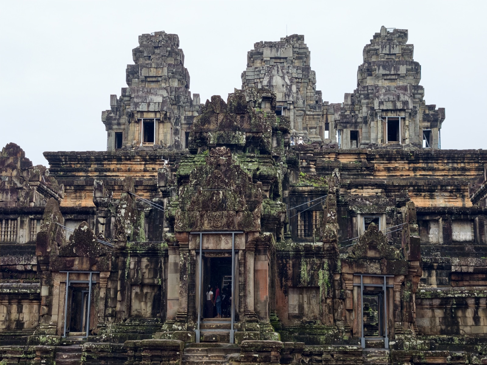
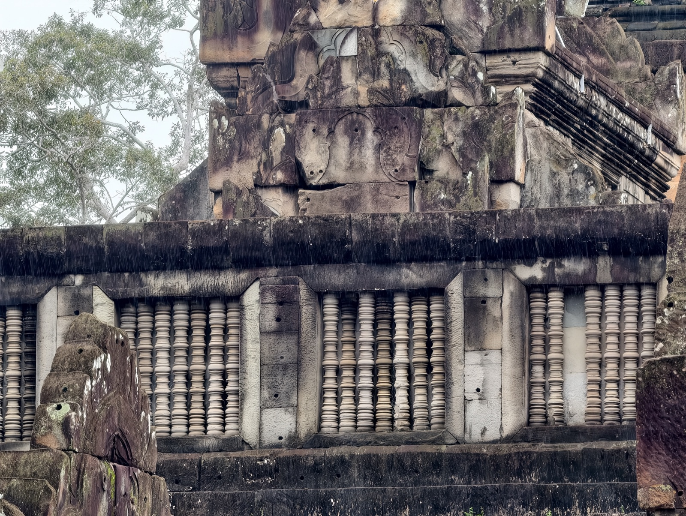

周萨神庙
周萨神庙与塔玛农庙隔路相望，被合称作「孪生寺庙」——但其实彼此并无从属关系，建造的年代比胜利门还要早。

周萨神庙原本是毁圮最严重的一批：茂密的树木盘踞在乱石之上，庙体几乎散架。法国治理时期曾做过结构补强，后来由中国修复队接手，花了八年时间清理、拆解、拼组，才有了今天这副精巧坚固的面貌。也正因为看起来太「新」，中国修复队的做法一直存在争议——石头是重新立起来了，可八百年的旧气也跟着少了几分。和对面法国人修的塔玛农庙对照着看，两种修复理念的差别一目了然。
